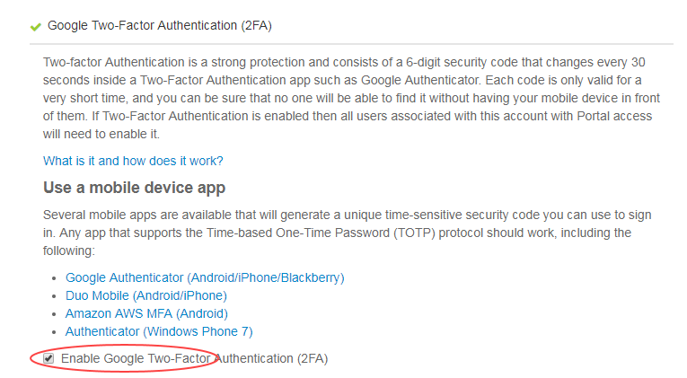

How to set up two-factor authentication in the UKCloud Portal
Overview
To provide additional security, you may want to set up two-factor authentication (2FA) in the UKCloud Portal. 2FA in the Portal requires that users enter a randomly generated code, as well as their user name and and password, when logging in to the Portal.

To set up 2FA, a Portal administrator must first enable 2FA for the Portal account. After enabling 2FA for the account, the next time a user attempts to log in, they will be prompted to set up 2FA for their user account by registering their Portal account with an authenticator app, such as Google Authenticator.
Enabling 2FA in the UKCloud Portal (administrators)
If you are a Portal administrator, you can enable 2FA for an account so that users must provide a 2FA code when they log in as well as their user name and password.
To enable 2FA:
Log in to the UKCloud Portal as an administrator.
For more detailed instructions, see the Getting Started Guide for the UKCloud Portal.
In the navigation panel, click Settings.
Select the Security Settings tab.
Expand the Google Two-Factor Authentication (2FA) section.
Select the Enable Google Two-Factor Authentication (2FA) check box.

When you're done, click Save.
Setting up 2FA for a user account (all users)
When you first log in to a Portal account that has 2FA enabled, you'll be prompted to set up 2FA:
Log in to the UKCloud Portal, providing your user name and password as usual and memorable word, if required.
For more detailed instructions, see the Getting Started Guide for the UKCloud Portal.
Per the instructions in the Configure your two-factor authentication dialog box, install an authenticator app and scan the provided QR code.

When you've installed and set up your authenticator app, enter the 6 digit code provided by the app in the Configure your two-factor authentication dialog box and click Confirm code to log in to the Portal.
For future logins to the Portal, use your authenticator app to generate a 2FA code to confirm your identity and complete the log in process.
Related videos
Feedback
If you find an issue with this article, click Improve this Doc to suggest a change. If you have an idea for how we could improve any of our services, visit UKCloud Ideas. Alternatively, you can contact us at products@ukcloud.com.